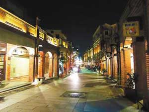

假日去哪玩？出遊 vs. 看展
夜遊三峽老街 看燈黃映磚紅
邱榆蕙｜聯合報／新北綜合新聞∣2014年4月11日
a白天看不稀奇！國寶級畫家李梅樹之子李景文為讓更多人欣賞三峽之美，將帶民眾夜遊三峽祖師廟、三峽老街及李梅樹紀念館，全程參與者最後還能獲得「百鳥朝梅飛羽入詩文」一書。
李景文表示，為讓當地人及新住民了解三峽之美，本月李梅樹紀念館與北大區龍恩里長林富子合作，規畫4場晚間導覽，讓民眾有機會在晚上一窺三峽之美。
導覽內容為李梅樹紀念館、三峽老街及三峽祖師廟，短短2小時，民眾就能了解三峽特色建築、風俗及近40年的歷史文化。
李景文指出，三峽老街如龍身、祖師廟如龍頭，一條龍街景「讓人流連忘返」；漫步在黑夜的三峽老街，從街頭看向街尾，紅磚瓦弄與澄黃燈火交織，寧靜令人陶醉。
夜遊三峽藝術之美將在本月11日、18日，兩天辦理4場晚間導覽，參加對象為三峽區居民，每場報名人數40人為限，報名電話0932391549。